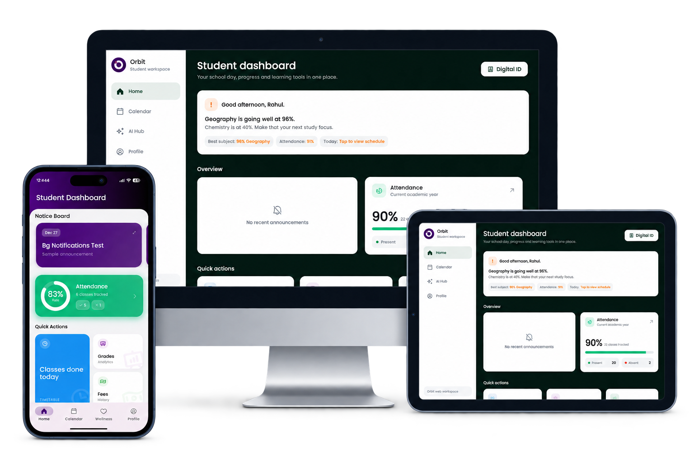

Attendance01
83%Present
See an attendance risk before it becomes a result.
Six students in 8-A are on track to miss the 75% board cutoff by January. Orbit surfaces the pattern in October.
Orbit reads your school’s attendance and academic data, surfaces students heading for trouble, and tells teachers and families what to do next.


Multi-device compatibility

Timetable, attendance, grades, fees, subjects and school updates, ready before the next bell.
Six students in 8-A are on track to miss the 75% board cutoff by January. Orbit surfaces the pattern in October.
Lectures, files, quizzes, polls and results stay connected to the class they belong to.
Razorpay integration is in final testing. Transactions remain disabled during the pilot.
Timetables and the shared school calendar keep the day coordinated.
“Let’s make the next step feel manageable.”
A focused starting point that encourages practical next steps and trusted support when it matters.
Most school software reports the past. Orbit brings attention to students who are drifting, the class that needs intervention and what to try first.

Families can link another student profile and switch safely between them without mixing attendance, fees, grades or classroom activity.
Parents use the student login today. A dedicated parent view ships in Q1.
See the family experience →Every school already has the data. What is missing is knowing who needs attention while there is still time to do something about it.
Attendance, grading, quizzes, AI summaries and linked family profiles.
Risk scoring, intervention tracking, a dedicated parent role and fee collection.
One view of the signals that show where the whole school needs attention.
Bring one class’s attendance and marks. We’ll show you the list in ten minutes.